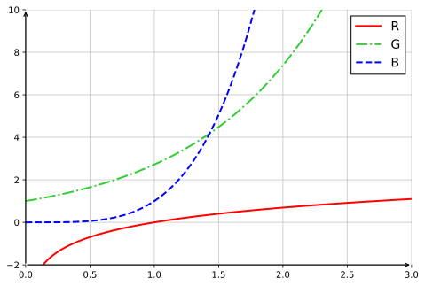

IAI · UET · VNU
Học máy
Ôn tập toán học nền tảng
Bài 1: Lý thuyết xác suất
-
Tính hiệp phương sai mẫu (sample covariance) giữa \(X\) và \(Y\):
X 2 7 5 11 4 9 1 8 6 3 10 12 Y -3 4 -1 6 0 2 -4 5 1 -2 7 3 -
Giá trị hiệp phương sai mẫu sẽ thay đổi như thế nào nếu:
- Cột \(X\) được nhân với 0.25?
- Cột \(Y\) được thay bằng giá trị \(5c - 2.5\), trong đó \(c\) là một hằng số cố định cho mọi giá trị \(Y\)?
Bài 2: Xác suất
Các tham số chuẩn tắc (canonical parameters) tương ứng với các phân phối xác suất sau là
gì?
- Uniform (đều)
- Bernoulli
- Binomial (nhị thức)
- Exponential (mũ)
- Gaussian (chuẩn)
Bài 3: Xác suất
Cho \(X_1\) và \(X_2\) là hai biến ngẫu nhiên nhị phân độc lập với \(\Pr(X_1 = 1) = 0.65\) và \(\Pr(X_2 = 1) = 0.30\). Đặt \(Y = 2X_1 + X_2\).
- Tính \(E(X_1)\).
- Tính \(E(Y)\).
- Tính \(E(Y \mid X_2 = 0)\).
Bài 4: Giải tích
Các hàm sau hội tụ về giá trị nào?
- \(f(x) = \dfrac{x}{1-x}\) khi \(x \to \infty\)
- \(f(x) = \dfrac{x^2-4}{x-2}\) khi \(x \to 2\)
- \(f(x) = \dfrac{(n+1)x}{x^n}\) với \(n>1\) khi \(x \to \infty\)
- \(f(k) = \sum_{i=1}^{k} (1/2)^k\) khi \(k \to \infty\)
Bài 5: Giải tích
Hãy đánh dấu hàm nào trong ba hàm sau tương ứng với đường nào trong hình
vẽ:
- \(f(x) = e^x\)
- \(f(x) = x^4\)
- \(f(x) = \ln(x)\)

Bài 6: Tổ hợp
- Một tập có kích thước \(n\) thì có bao nhiêu tập con khác nhau?
- Một tập có kích thước \(n\) thì có bao nhiêu tập con khác nhau có kích thước \(k\)?
Bài 7: Đại số tuyến tính
Mỗi hệ phương trình sau có bao nhiêu nghiệm? Vì sao?
a)
\[ \begin{cases} 2x + y = 1\\ 5x - 2y = 3 \end{cases} \]b)
\[ \begin{cases} 3u - 5v + 2w = 10\\ 2u - 3v + 7w = 23 \end{cases} \]c)
\[ \begin{cases} 3p + 5q - r = 1\\ -p + 4q + 2r = 9\\ 6p + 10q - 2r = 3 \end{cases} \]Bài 8: Đại số tuyến tính
Xét các vector sau.
-
Kích thước (số chiều) của mỗi vector là bao nhiêu?
- (a) \(x_a=\begin{pmatrix}4\\2\\-5\end{pmatrix}\)
- (b) \(x_b=\begin{pmatrix}3\\-1\\1\end{pmatrix}\)
- (c) \(x_c=\begin{pmatrix}5\\0\end{pmatrix}\)
- (d) \(x_d=\begin{pmatrix}1\\1\\4\\2\end{pmatrix}\)
- (e) \(x_e=\begin{pmatrix}0\\2\end{pmatrix}\)
- (f) \(x_f=\begin{pmatrix}-1\\1\\1\\-2\end{pmatrix}\)
-
Thực hiện các phép toán sau với các vector ở Phần 1.
- (a) \(x_a + x_c\)
- (b) \(4 \cdot x_e\)
- (c) \(x_d \cdot x_f\)
- (d) \(\lVert x_d \rVert\)
- Cặp vector nào trong Phần 1 là trực giao?